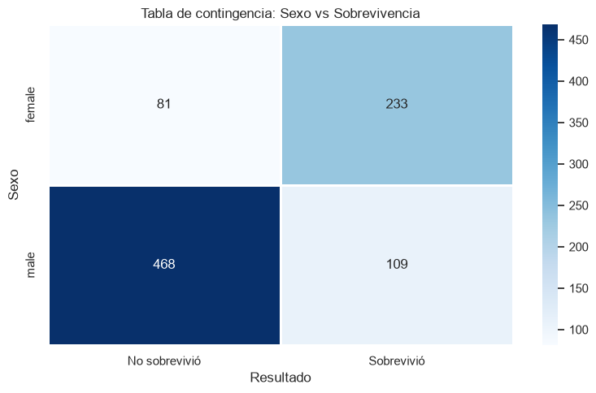
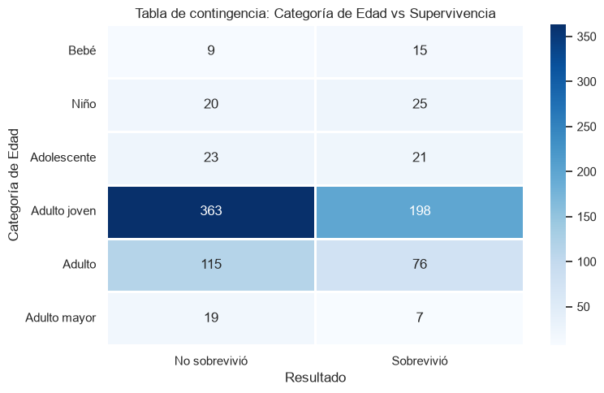
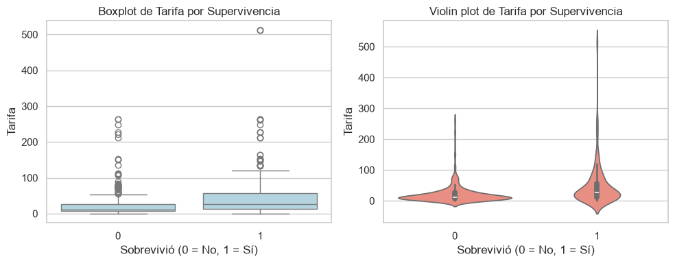
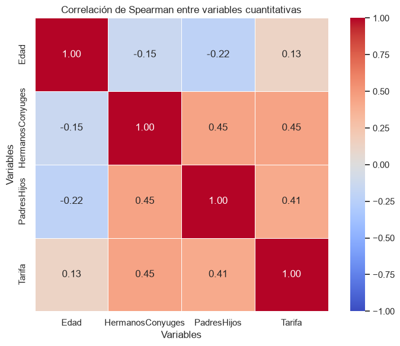

Titanic — Análisis de Supervivencia
Análisis estadístico de los factores asociados a la supervivencia de los pasajeros del RMS Titanic, combinando estadística descriptiva con pruebas de hipótesis formales (chi-cuadrado, ANOVA y tamaño del efecto) para determinar qué variables realmente influyeron en el resultado.
Problema
El 15 de abril de 1912 el RMS Titanic se hundió tras chocar contra un iceberg. De los pasajeros a bordo, solo una parte sobrevivió. El proyecto busca determinar qué variables — sexo, edad, clase, tarifa pagada, número de familiares a bordo — se relacionan estadísticamente con la probabilidad de sobrevivir.
Objetivo
Determinar, con pruebas estadísticas formales (no solo observación descriptiva), qué variables presentan una asociación significativa con la supervivencia, y distinguir entre significancia estadística y magnitud real del efecto.
Metodología
Carga e inspección del dataset desde Kaggle vía KaggleHub → análisis exploratorio de las
variables (rangos de edad, tarifa) → pruebas de normalidad mediante Shapiro-Wilk y gráficos Q-Q →
análisis de relaciones entre variables → pruebas estadísticas según el tipo de variable (chi-cuadrado
para categóricas frente a supervivencia) → ANOVA, cálculo del tamaño del efecto y comparación post hoc
de Tukey para variables cuantitativas → interpretación de resultados y conclusiones.
Key Findings
Visualizaciones
{kind=link}

{kind=link}

{kind=link}

{kind=link}

Conclusiones
El sexo fue una de las variables con mayor relación con la supervivencia: las mujeres sobrevivieron en una proporción muy superior a los hombres. La clase del pasajero también presentó una relación importante con el resultado.
El análisis estadístico formal reveló un matiz clave: aunque la categoría de edad resultó significativa en la prueba de chi-cuadrado, su tamaño de efecto fue pequeño — es decir, estadísticamente detectable pero de poca influencia real. En cambio, la tarifa pagada sí mostró una influencia relevante sobre la probabilidad de supervivencia según el ANOVA. Ninguna de las variables cuantitativas analizadas siguió una distribución normal (prueba de Shapiro-Wilk), lo cual se tuvo en cuenta al interpretar los resultados.
Abre el notebook completo (Jupyter, exportado a HTML) en una pestaña nueva — código, tablas y las 20 visualizaciones originales del análisis, aislado del resto del sitio.